News
Services
aircraft detailing
aircraft cabin cleaning
airplane detailing
aircraft cleaning jobs
aircraft detailing salary
aircraft cleaning products
aircraft cabin cleaning jobs
aircraft detailing jobs
aircraft cleaning services
aircraft detailing certification
exterior aircraft cleaning
aircraft detailing las vegas
aircraft detailing supplies
aircraft cabin cleaning manual
aircraft detailing business
cleaning aircraft windows
aircraft cleaning equipment
detailing a plane
aircraft detailing solutions
aircraft cleaning and corrosion control
aircraft engine cleaning
aircraft engine cleaning solvent
up and away aviation detailing
what is aircraft cleaning
About Us
News
Choosing the Right Products and Equipment for Boat Detailing
Choosing the right products and equipment for boat detailing can be a daunting task.. It's important to consider both cost savings associated with cheaper options, as well as the quality of the product or equipment in order to achieve the desired end result. (Negation) One should not base their decision solely on price!
Posted by
on 2023-06-25
Common Mistakes to Avoid When Detailing Your Boat
Detailing your boat can be a rewarding experience, but it's important to avoid common mistakes (like using pressure washers incorrectly!) to ensure that the job is done right.. Pressure washers are powerful tools - if used without care they can easily damage a boat.
Posted by
on 2023-06-25
Cost-Effective DIY Solutions for Boat Detailing Around Wilmington, NC
Doing boat detailing around Wilmington, NC can be quite expensive and is not always cost-effective. (However,) Luckily there are plenty of DIY solutions that can help you save money!. One option is to rent a machine for cleaning your boat.
Posted by
on 2023-06-25
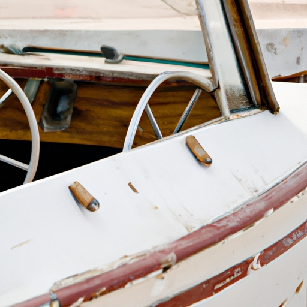
Discover the Benefits of Professional Detail Services for Boats Around Wilmington, NC
Boating in Wilmington, NC is a great way to enjoy the beautiful coastline and waterways. (But) It can also be a daunting task if you don't know where to start!. Fortunately, there are recommended resources available to help boaters find and maintain boats in Wilmington, NC.
One of the best ways to get started is by getting professional detail services for your boat around Wilmington.
Posted by
on 2023-06-25
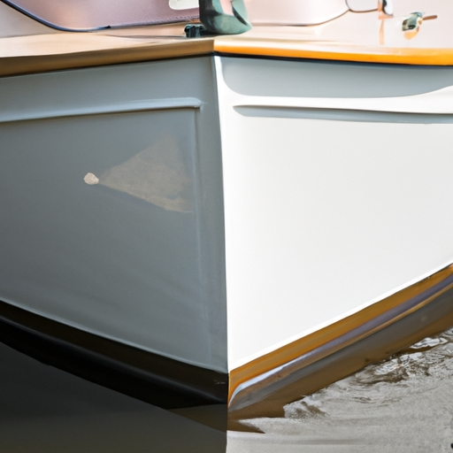
Discover the Wonders of Professional Boat Detailing Near Wilmington, NC!
Discovering the wonders of professional boat detailing near Wilmington, NC can be quite a thrilling experience!. From polishing and waxing to deep cleaning and buffing, there are so many things that can be done to make your vessel look its best.
Posted by
on 2023-06-25
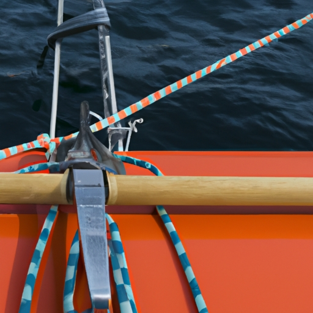
Get Ready for Summer Now! How to Transform Your Boats Appearance with Detailing near Wilmington
It's time to get ready for summer now! (Transforming your boat's appearance with detailing near Wilmington can be a fun and rewarding experience).. We all know how important it is to keep the outside of our boats looking great.
Posted by
on 2023-06-25
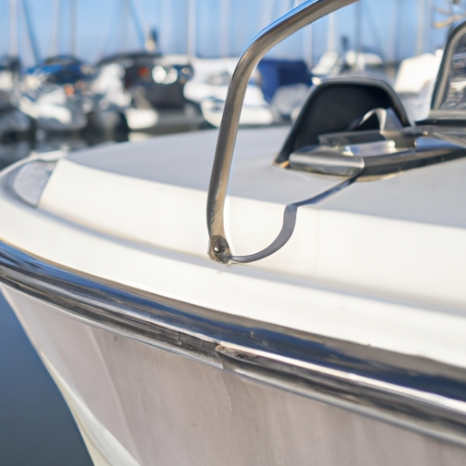
How Can Professional Boat Detailing Near Wilmington, NC Enhance Your Boating Experience?
Boating near Wilmington, NC can be an amazing experience!. Professional boat detailing can make it even better.
Posted by
on 2023-06-25
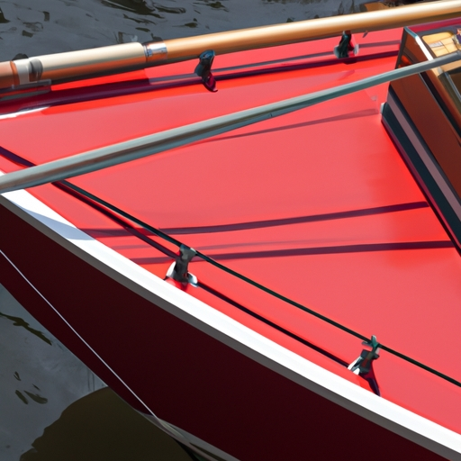
How to Make Your Boat Shine Like New Again - Boat Detailing Near Wilmington, NC
Making your boat shine like new again can be a daunting task, but with the right tools and technique it can be made easy.. Boat detailing near Wilmington NC is the perfect place to start. (Negation) Not only will they have the necessary supplies, but they'll also have experienced staff to guide you every step of the way.
First, you need to remove any dirt or grime from your boat's exterior surfaces.
Posted by
on 2023-06-25
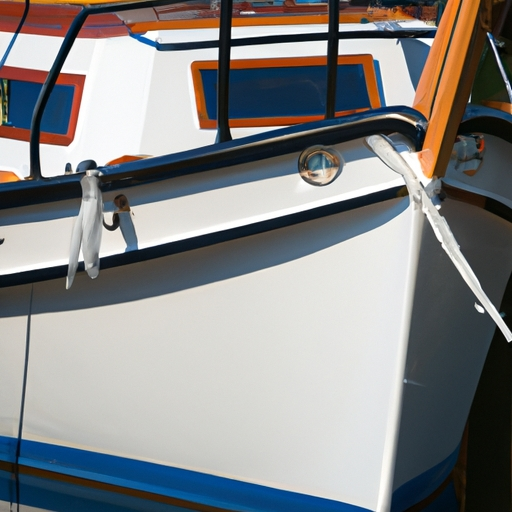
Need a Boat Makeover? Learn How to Refresh Its Look With Detailing Near Wilmington
Needing a boat makeover?. Learn how to refresh its look with detailing near Wilmington!
Posted by
on 2023-06-25
Protecting Your Investment: Tips for Maintaining a Spotless Appearance
Maintaining your car's spotless appearance is an important way to protect your investment.. But, with busy lives and limited time, it can be difficult to keep up with all the necessary detailing services. (However,) Investing in professional detailing services can save you time and money in the long run!
Posted by
on 2023-06-25
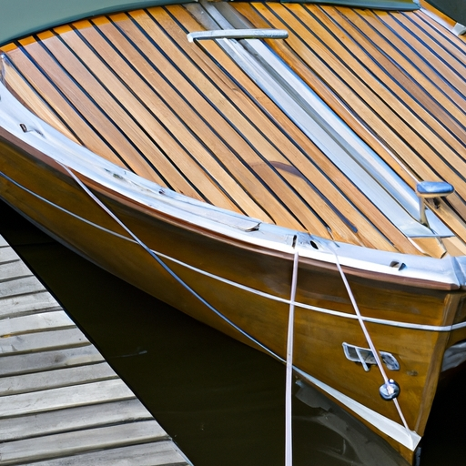
Steps to Ensure a Quality Boat Detailing Job
A quality boat detailing job requires attention to detail, and a few final touches can make all the difference.. First, (if applicable) add fuel stabilizer to the fuel tank when refilling with gasoline/diesel after completion of the job.
Posted by
on 2023-06-25
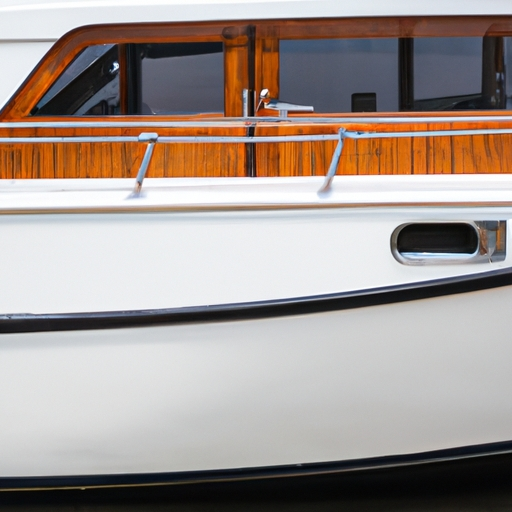
Take Pride in Your Boat's Appearance: How to Find Quality Boat Detailing Services in Wilmington, NC?
Finding quality boat detailing services in Wilmington, NC can be a challenge!. After all, you want to make sure your boat is taken care of with the utmost respect and care.
Posted by
on 2023-06-25
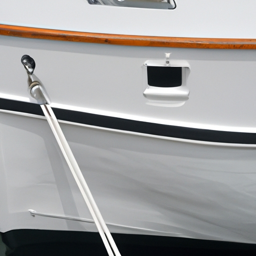
The Benefits of Professional Boat Detailing
Boat detailing can be a real lifesaver!. Not only does it make your boat look amazing, but there are many benefits that come with professional detailing. (From) increased fuel efficiency to much longer durability, the advantages of getting your boat detailed by a pro are immense.
First off, having your boat professionally detailed will improve its fuel efficiency drastically.
Posted by
on 2023-06-25
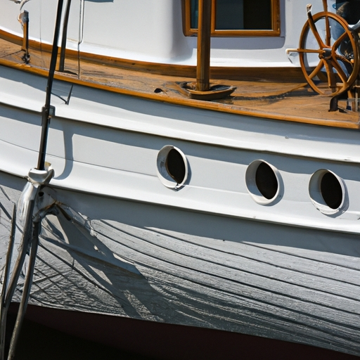
Unveil the Hidden Beauty of Your Boat with Professional Detailing in Wilmington, NC
Conclusion: Unveil the hidden beauty of your boat with professional detailing in Wilmington, NC!. It's a great way to spruce up your vessel and make it shine like new.
Posted by
on 2023-06-25
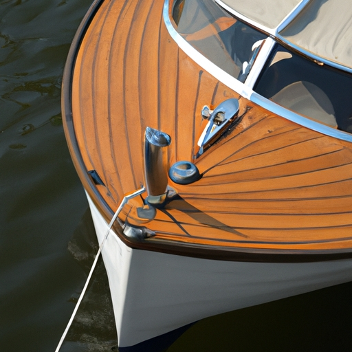
What Can You Expect from a Professional Boat Detailing Service in Wilmington, NC?
It's no secret that owning a boat is expensive and it takes a lot of effort to keep them in top condition.. Investing in a professional boat detailing service in Wilmington, NC can be worth it for the long run!
Posted by
on 2023-06-25
What are the Benefits of Professional Boat Detailing Services near Wilmington, NC?
The benefits of professional boat detailing services near Wilmington, NC are clear!. Firstly, it helps prevent damage from salt and sun exposure.
Posted by
on 2023-06-25
What is Professional Boat Detailing Near Wilmington, NC?
Professional boat detailing near Wilmington, NC is an important service to keep your boat looking its best.. It consists of a thorough cleaning and waxing process which can protect the boat from saltwater corrosion (and other environmental damage).
Posted by
on 2023-06-25
What is the Benefit of Boat Detailing in Wilmington, NC?
Boat detailing in Wilmington, NC offers many benefits!. It can save you money on expensive repairs and keep your boat looking great.
Posted by
on 2023-06-25
Old Posts
New Posts